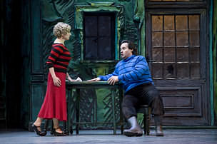

LA
TABERNERA DE SEVILLA
Sevilla, Teatro de la Maestranza. 30 de junio
de 2008. Sorozábal: La tabernera del puerto. Carmen González,
Juan Jesús Rodríguez, José Bros, Iván García, Pilar Moral, Ismael
Fritschi, Marta Moreno, Aurelio Puente, Abel García, Ángel Burgos,
Iván Luis, Juan Viadas. Coro de la A. A. del Teatro de la Maestranza.
Real Orquesta Sinfónica de Sevilla. Enrique Diemecke, dirección
musical. Luis Olmos, dirección escénica. Producción escénica del
Teatro de la Zarzuela de Madrid.
Por Fernando López
Vargas-Machuca
(blog)

Hace ya tiempo que en el Maestranza tenemos la oportunidad de disfrutar
de un título de zarzuela al año, por lo general en una producción del
madrileño Teatro de la Zarzuela. En esta ocasión ha tocado La
tabernera del puerto, partitura melódicamente muy hermosa pero a
juicio de quien suscribe un tanto blanda y cercana a la cursilería, en
una propuesta de Luis Olmos francamente conseguida: apoyándose en una
atractiva escenografía de Gabriel Carrascal y en una matizada
luminotecnia de Fernando Ayuste, el veterano director teatral ha
logrado un espectáculo distinto y renovador -manifiesta su abierta
inspiración en el mundo del comic- pero muy respetuoso con el lenguaje
y las convenciones propias del género. Todo ello perfilando bien a los
personajes, sin sal gorda en la pareja cómica de Chinchorro y Antigua
-no obstante muy divertida-, y apuntando claramente el incesto en la
relación entre Marola y Juan de Eguía, aquí presentado como un
personaje antipático que no duda a la hora de abusar, en todos los
sentidos, de las personas que le rodean. Admirable la dirección de
masas y la resolución, espectacular, de la escena de la tormenta.
José Bros y Juan Jesús Rodríguez triunfaron por todo lo alto, pero
aquí hemos de pararnos para reflexionar ante dos tipos de cantante
bien diferenciados. El tenor catalán no posee una voz interesante: no
es grande ni muy extensa, y su timbre no puede calificarse como
atractivo. Sin embargo este señor ha trabajado muchísimo, ha
enriquecido su técnica, ha minimizado las nasalidades que afeaban su
voz y, siempre con paciencia e inteligencia, ha planificado con
sensatez su carrera para hacer sólo aquello que su instrumento, su
técnica y su particular sensibilidad, mucho antes elegante y
aristocrática que temperamental, le permiten resolver con brillantez.
Y aunque a quien suscribe le puede gustar más el acercamiento de un
Plácido Domingo al personaje de Leandro, por ejemplo, no se puede
dejar de considerar el de Bros como modélico por la solidez y
elegancia de su línea de canto, por el admirable equilibrio entre
belleza y expresión, por su intachable buen gusto y también, por qué
no, por la valentía y brillantez de sus agudos.
Un caso muy distinto el del cantante onubense. Juan Jesús Rodríguez
posee un magnífico instrumento de barítono lírico, canta con mucha
pasión y, guiado por un instinto teatral de primer orden, sabe ofrecer
veracidad escénica y canora a los personajes. Ahora bien, son los
suyos acercamientos basados mucho antes en la intuición que en la
inteligencia, la compresión del estilo o la atención al matiz. Su Juan
de Eguía fue fenomenal por entrega, poderío vocal y sinceridad
expresiva, pero a este señor le queda mucho por recorrer si pretende,
como él desea, ser un gran barítono verdiano. A tenor del Conde de
Luna que le escuchamos en Jerez (enlace)
y de los clips que ofrece en su página web (enlace),
habría que recomendarle que se buscara un buen repertorista para
analizar en profundidad los papeles, mejorar el estilo y, sobre todo,
descubrir de qué maneras puede matizar vocalmente los aspectos
expresivos. Materia prima y técnica las tiene ya: en sus manos está
llegar lejos o quedarse a medio camino. Que se mire en el espejo de
Bros y que reflexione. Y que no olvide, como le ocurre a tantos
cantantes jóvenes, que tener muchos contratos no significa
necesariamente estar haciéndolo muy bien.
Al lado de la magnífica pareja masculina tuvo poco que hacer Carmen
González, pues a pesar de sus muy buenas maneras y de solvencia canora
en todo momento -mucho más que eso en su célebre romanza-, su falta de
personalidad interpretativa hizo que su en cualquier caso sólida,
estimable y profesional Marola quedara desdibujada sobre la escena.
Fantásticos por el contrario Iván García como Simpson y Pilar Moral
como Abel, muy desenvuelto Ismael Fritschi como Chinchorro y
maravillosa como actriz -nula en lo vocal- Marta Moreno en el rol de
Antigua. El resto tuvo un excelente nivel.
Funcionaron bien las cosas en el foso gracias al buen nivel de la ROSS
y a la batuta no creativa ni personal, pero sí atenta y sensible del
mexicano Enrique Diemecke, sustituyendo al inicialmente previsto
Miguel Roa. La calidez y el buen gusto fueron sus mejores armas,
quedándose algo corto de teatralidad, sentido de los contrastes y
fuerza expresiva. El coro se movió en un buen nivel canoro. Gran noche
de zarzuela, de esas que le hacen a uno reconciliarse con un género
con el que, dicho sea de paso, deberíamos ser un poco más críticos en
este tiempo de lo políticamente correcto en los que parecemos
obligados a hablar maravillas de cualquier título de nuestro pasado
lírico.
Fotografías: Guillermo
Mendo
|